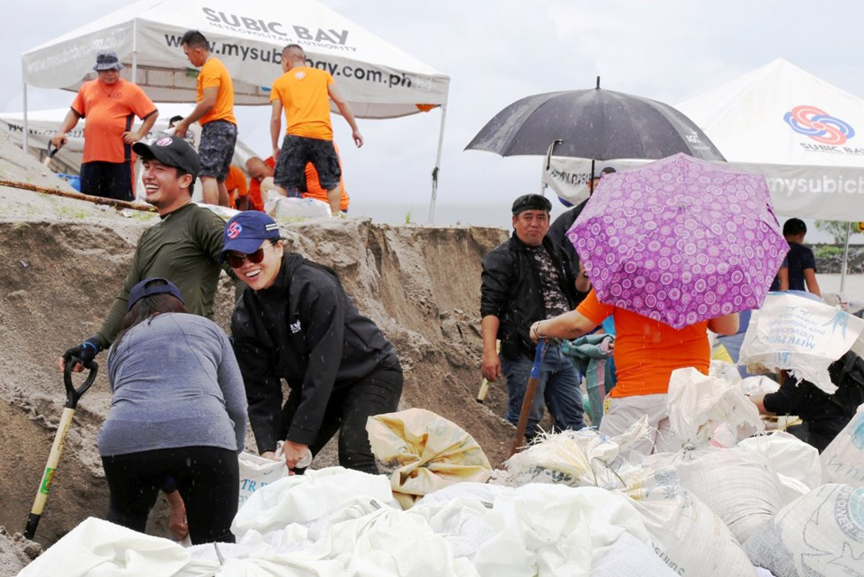
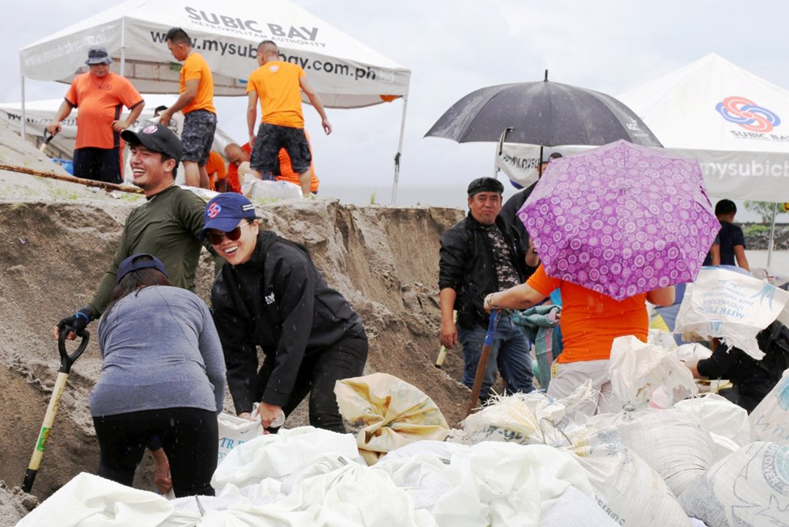
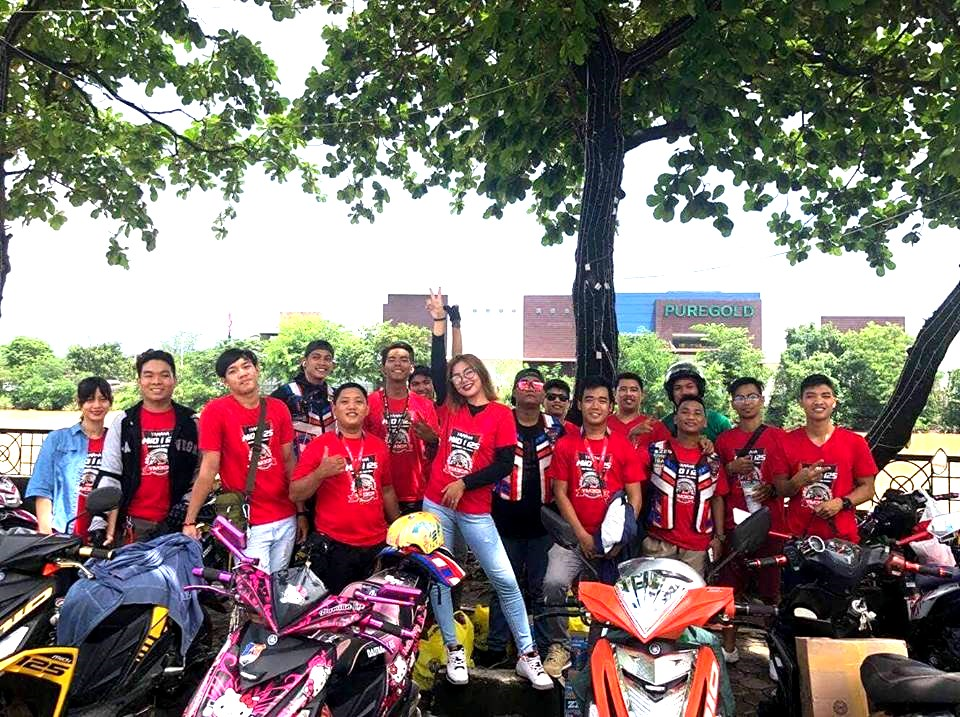

SBMA CHIEF BAGS 'JCI' PINAY POWER AWARD
By Randy Datu
SUBIC BAY FREEPORT — Subic Bay Metropolitan Authority (SBMA) Chairman and Administrator Wilma T. Eisma was named Pinay Power awardee for Central Luzon, besting nine other nominees to the competition organized by the Junior Chamber International (JCI) Philippines.
Ruth Devillena, JCI Olongapo vice president, disclosed that Eisma was nominated by JCI Olongapo in the business category for excelling in management and entrepreneurship.
“Her efforts provided economic development tothe community and helped others succeed in business,” Devillena said of Eisma’s nomination.
She added that out of 10 Pinay Power nominees in the Central Luzon region, Eisma emerged as the re-gional Pinay Power awar-dee. The others were nomi-nated for excellence in sports, academe, and community.
However, due to a prior commitment, Eisma was not able to attend the regional awarding ceremony for the Pinay Power Summit Awards held in Tarlac City last July 21 and JCI offi-cials presented her with the award here last Monday.
In accepting the award, Eisma cited his co-workers at the SBMA for helping build a culture of excellence and achievement in the Subic Bay Freeport.
“There’s no better time than now to say that we’re better and stronger together,” Eisma said.
“My achievements are their achievements, too, because I cannot do this job all by myself.”
“I am truly humbled and honored to receive this award that recognizes women. And I share this with the equally remarkable women and men of SBMA who have given me full support in all my endeavors,” she added.
The Pinay Power award, which was founded in 2013 by JCI Makati Princess Urduja chapter, is now a national project of JCI Phils. aimed at recog-nizing women who are com-mitted in the pursuit of women protection and com-munity development.
JCI Phils. is a non-profit organization of young active citizens ages 18 to 40 who are engaged and committed to creating im-pact in their communities, with the mission to provide development opportunities that empower young people to create positive change.
Eisma, who is a lawyer, was also adjudged a winner in last year’s search for the “100 Most Influential Fili-pina Women in the World,” which recognizes women of Philippine ancestry who are influencing the face of leadership in the global workplace.

Kabataan, hinimok sa pagbabasa
OLONGAPO CITY- Ipinagdiwang ang SM City Olongapo ang National Children’s Book Reading Day (NCBRD), isang taunang okasyon sa ilalim ng programa ng SM Cares for Children and Youth, kamakailan.
Grade 1 hanggang
NCBRD ay naglalayong ipalaganap ang literacy at hikayatin ang mga bata na hubugin ang kanilang pagkalibang sa pagbabasa sa murang edad pa lamang.
Sa nabanggit na okasyon, 50 mag-aaral mula sa Asinan Elementary School sa Olongapo City, mulaGrade 1 hanggang 4 ang binigyang pagkakataon na makapakinig ng mga kwento sa mga aklat na nilimbag ng Vibal and Anvil Publishings.
Ang mga bata ay nalibang sa mga kwentong binigyang buhay nina Maria Raquel Bustamante-Dela Torre ng 96.7 Klite FM Olongapo at Marie Elaine Gonzales, leasing manager ng SM Olongapo.
Naging masigla ang mga bata sa pakikinig sa mga kwento mula sa mga aklat at aktibong nakilahaok sa talakayan. Sa tulong ng mga tagapagkwento, napag-usapan ang mga mabubuting mensahe mula sa mga kwento, at hinikayat ang mga bata na maging mahilig sa pagbabasa.
Ang NCBRD ay ipi-nagdiriwang sa SM Super-malls upang iparanas sa mga bata ang sining ng pagbabasa sa pakikipagtulu-ngan ng Department of Education (DepEd), Anvil Publishing , Vibal Pub. at National Bookstore
Ang SM Olongapo at iba pang SM Supermalls sa buong bansa at sa China ang magkakasabay na nagdi-wang ng Book Reading Day katuwang ang mga partner na nagbahagi ng katulad na pagmamalasakit sa pagpa-paunlad ng literasiyasa murang edad.۩

Yamaha Mio 3 Club of the Philippines


They truly LOVE ZAMBALES
Mga Zambaleñong nag- ambag-ambag upang makapagbigay ng makakain sa ating mga kababayan ( mga bata at Homeless family ) na nasalanta ng nakalipas na pagbaha sa Subic at Olongapo.
Nakatutuwang pagmasdan na kahit sa kanilang munting tulong ay makikita SA mukha ng mga naabutan ang malalaking ngiti at kasiyahan.Ang kusang-loob na pagtulong at malasakit sa kapwa ay naganap katatapos lamang ng malawaang pagbaha sa Olongapo City at Subic.
Sa inyo na mga miyembro ng YM3CP Zambales Chapter, kami ay lubos na humahanga sa inyong taglay na kabutihang puso.
Pasasalamat:
Larawan: Raven Canonizado
Teksto: Ar-jay Calimlim Magpantay


3utas,13 aresado sa buy-bust
ni LIGHT NOLASCO/ BALITA
NUEVA ECIJA (Aug. 7) – Tatlo ang nasawi habang 13 ang naaresto sa magkakahiwalay na anti-illegal drugs operation sa Nueva Ecija, sa nakalipas na 72 oras.
Sa report na ipinadala kay Senior Supt. Eliseo Tanding, Nueva Ecija Police director, ang mga nasawi ay sina Melvin Santos, ng Barangay La Torre, Talavera; Kenneth Corpuz, ng Dicarma, Caba-natuan City; at Leonardo Milan, 41, ng Bgy. Uma-ngan, Aliaga, pawang sa lalawigang ito.
Ang unang dalawang napatay ay nakipagbarilan umano sa mga pulis nang makahalatang operatiba ng pulisya ang katransaksyon.
Nanlaban umano sa pulis si Milan, sa isang checkpoint sa San Mariano, San Antonio ng nabanggit na lalawigan.
Ayon kay Chief Insp. Marlon Cudal, hepe ng San Antonio police, sangkot si Milan sa robbery hold-up activities sa Aliaga, Nueva Ecija at drug surrenderer noong 2016.
Kabilang naman sa mga naaresto sina Erwin Reva-muntan, 51, ng Bgy. Poblacion West; Casiano Agustin III, 34, ng Calaocan District, kapwa taga-Rizal; at Maximo Mallari, 51, ng Bgy. Palomaria, Bongabon.
Ricardo Caguiat, 65, ng Bgy. 201, 3018 Abucay St., Tondo, Maynila na nakuhanan ng apat na pakete ng shabu.
Kabilang din sina Ronnie Obligasyon, 47, ng San Leonardo; Efren de Fiesta, 35, ng Bgy. Villa Flores, Cuyapo; Jayson Carvajal Villacorta, 39, ng Bgy. San Juan Aliaga; Roberto Pingol Magno, 35, ng Bgy. San Roque, San Isidro. Dinakip din sa Purok 2, Bgy. Imelda sina Rodolfo Padilla Iniego, Jr., 21; Roberto Nuque Cincepcion, 38; Wilson Villanueva dela Cruz, 18, kapwa taga- Bgy. MS Garcia; Eric Vitoriolo, 41; at Leonora dela Cruz Mallari, 54, Bgy. Imelda, Cabanatuan City.۩
Baby patay sa sunog
CABANATUAN CITY (Aug. 7)– Isang sanggol na lalaki ang nasawi habang anim na iba pa ang sugatan nang matupok ang kanilang bahay sa Barangay Caali-bangbangan, Cabanatuan City, kamakailan.
Kinilala ang nasawi na si Arwin Xian Legaspi, 1 taong gulang, ng Sitio Boundary, ng nabanggit na barangay.
Sa imbestigasyon, naga-nap ang sunog sa nasabing lugar dakong 1:50 ng madaling araw.
Kabilang sa nasugatan si Ariel Legaspi, 52; at live-in partner na si Clarissa Gamillam 40; at mga anak na sina Bryan, Justina at Angelica; at inang si Jovita Gamillam, 64.
Umabot sa ikalawang alarma ang sunog bago naapula ng mga bumbero.-LIGHT A. NOLASCO